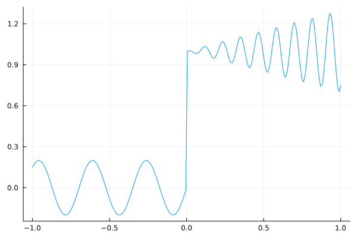
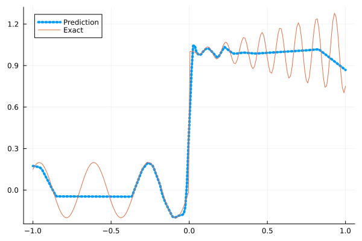
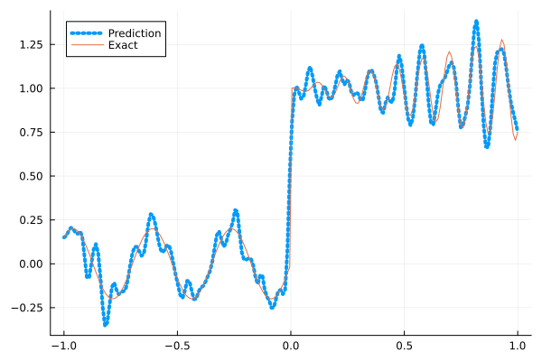
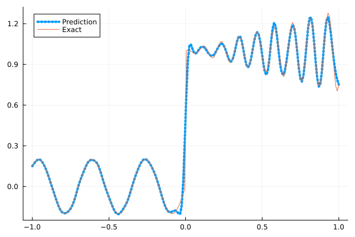
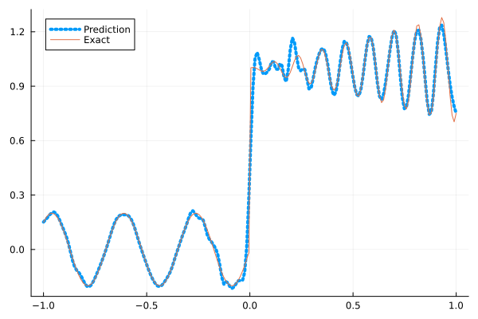
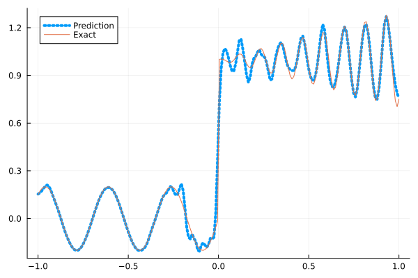

Fitting a nonlinear discontinuous function
This example is taken from here. However, we do not use adaptive activation functions. Instead, we show that using suitable non-parametric activation functions immediately performs better.
Consider the following discontinuous function with discontinuity at $x=0$:
\[u(x)= \begin{cases}0.2 \sin (18 x) & \text { if } x \leq 0 \\ 1+0.3 x \cos (54 x) & \text { otherwise }\end{cases}\]
The domain is $[-1,1]$. The number of training points used is 50.
Import pacakges
using Lux, Sophon
using NNlib, Optimisers, Plots, Random, StatsBase, ZygoteDataset
function u(x)
if x <= 0
return 0.2 * sin(18 * x)
else
return 1 + 0.3 * x * cos(54 * x)
end
end
function generate_data(n=50)
x = reshape(collect(range(-1.0f0, 1.0f0, n)), (1, n))
y = u.(x)
return (x, y)
endgenerate_data (generic function with 2 methods)Let's visualize the data.
x_train, y_train = generate_data(50)
x_test, y_test = generate_data(200)
Plots.plot(vec(x_test), vec(y_test),label=false)
Naive Neural Nets
First we demonstrate show naive fully connected neural nets could be really bad at fitting this function.
model = FullyConnected((1,50,50,50,50,1), relu)Chain(
layer_1 = Dense(1 => 50, relu), # 100 parameters
layer_2 = Dense(50 => 50, relu), # 2_550 parameters
layer_3 = Dense(50 => 50, relu), # 2_550 parameters
layer_4 = Dense(50 => 50, relu), # 2_550 parameters
layer_5 = Dense(50 => 1), # 51 parameters
) # Total: 7_801 parameters,
# plus 0 states, summarysize 80 bytes.Train the model
function train(model, x, y)
ps, st = Lux.setup(Random.default_rng(), model)
opt = Adam()
st_opt = Optimisers.setup(opt,ps)
function loss(model, ps, st, x, y)
y_pred, _ = model(x, ps, st)
mes = mean(abs2, y_pred .- y)
return mes
end
for i in 1:2000
gs = gradient(p->loss(model,p,st,x,y), ps)[1]
st_opt, ps = Optimisers.update(st_opt, ps, gs)
if i % 100 == 1 || i == 2000
println("Epoch $i || ", loss(model,ps,st,x,y))
end
end
return ps, st
endtrain (generic function with 1 method)Plot the result
@time ps, st = train(model, x_train, y_train)
y_pred = model(x_test,ps,st)[1]
Plots.plot(vec(x_test), vec(y_pred),label="Prediction",line = (:dot, 4))
Plots.plot!(vec(x_test), vec(y_test),label="Exact",legend=:topleft)Epoch 1 || 1.5552550700203511
Epoch 101 || 0.01772846269559314
Epoch 201 || 0.015848923120878523
Epoch 301 || 0.015599518221036801
Epoch 401 || 0.015152675264363796
Epoch 501 || 0.014383589720122216
Epoch 601 || 0.013506721490209442
Epoch 701 || 0.013200462578584073
Epoch 801 || 0.012253249044325622
Epoch 901 || 0.012057656103799648
Epoch 1001 || 0.011940157197381937
Epoch 1101 || 0.011930555650113367
Epoch 1201 || 0.011928477386206927
Epoch 1301 || 0.011939068571530702
Epoch 1401 || 0.011841293739513148
Epoch 1501 || 0.01188132189381208
Epoch 1601 || 0.01188385095416138
Epoch 1701 || 0.011886787693876499
Epoch 1801 || 0.011827715931080935
Epoch 1901 || 0.011815527088735575
Epoch 2000 || 0.011869501855294734
11.888558 seconds (13.19 M allocations: 1.486 GiB, 4.95% gc time, 91.43% compilation time)
Siren
We use four hidden layers with 50 neurons in each.
model = Siren(1,50,50,50,50,1; omega = 30f0)Chain(
layer_1 = Dense(1 => 50, sin), # 100 parameters
layer_2 = Dense(50 => 50, sin), # 2_550 parameters
layer_3 = Dense(50 => 50, sin), # 2_550 parameters
layer_4 = Dense(50 => 50, sin), # 2_550 parameters
layer_5 = Dense(50 => 1), # 51 parameters
) # Total: 7_801 parameters,
# plus 0 states, summarysize 88 bytes.@time ps, st = train(model, x_train, y_train)
y_pred = model(x_test,ps,st)[1]
Plots.plot(vec(x_test), vec(y_pred),label="Prediction",line = (:dot, 4))
Plots.plot!(vec(x_test), vec(y_test),label="Exact",legend=:topleft)Epoch 1 || 0.953808129939165
Epoch 101 || 0.0012585385184022207
Epoch 201 || 3.375290427373547e-5
Epoch 301 || 5.896127398479197e-7
Epoch 401 || 1.0200107442485154e-8
Epoch 501 || 1.3218223432646465e-10
Epoch 601 || 2.8153781562432893e-12
Epoch 701 || 3.069157843029158e-13
Epoch 801 || 1.002723871570104e-13
Epoch 901 || 2.981148369294916e-14
Epoch 1001 || 3.91888096245487e-14
Epoch 1101 || 4.308368613352134e-14
Epoch 1201 || 3.9464232623911186e-14
Epoch 1301 || 3.865239129649181e-14
Epoch 1401 || 2.7237636345245984e-14
Epoch 1501 || 2.8519321206982514e-14
Epoch 1601 || 5.261876871833373e-14
Epoch 1701 || 5.830398826400934e-14
Epoch 1801 || 4.841519520364535e-14
Epoch 1901 || 7.097721331734957e-14
Epoch 2000 || 5.1029498046128667e-14
5.916938 seconds (8.16 M allocations: 1.298 GiB, 5.66% gc time, 82.86% compilation time)
As we can see the model overfits the data, and the high frequencies cannot be optimized away. We need to tunning the hyperparameter omega
model = Siren(1,50,50,50,50,1; omega = 10f0)Chain(
layer_1 = Dense(1 => 50, sin), # 100 parameters
layer_2 = Dense(50 => 50, sin), # 2_550 parameters
layer_3 = Dense(50 => 50, sin), # 2_550 parameters
layer_4 = Dense(50 => 50, sin), # 2_550 parameters
layer_5 = Dense(50 => 1), # 51 parameters
) # Total: 7_801 parameters,
# plus 0 states, summarysize 88 bytes.@time ps, st = train(model, x_train, y_train)
y_pred = model(x_test,ps,st)[1]
Plots.plot(vec(x_test), vec(y_pred),label="Prediction",line = (:dot, 4))
Plots.plot!(vec(x_test), vec(y_test),label="Exact",legend=:topleft)Epoch 1 || 0.9304542634147398
Epoch 101 || 0.008633523307599951
Epoch 201 || 0.006153526299069348
Epoch 301 || 0.004407069853076051
Epoch 401 || 0.003029521042892831
Epoch 501 || 0.002275008015354602
Epoch 601 || 0.0016047858880920934
Epoch 701 || 0.0009391898875158233
Epoch 801 || 0.0004165867283681238
Epoch 901 || 0.00016684775555327706
Epoch 1001 || 8.612983637463332e-5
Epoch 1101 || 5.67722606927689e-5
Epoch 1201 || 4.3377945396191435e-5
Epoch 1301 || 3.6570202575907116e-5
Epoch 1401 || 3.262253737147448e-5
Epoch 1501 || 2.986980597044518e-5
Epoch 1601 || 2.7614100629120532e-5
Epoch 1701 || 2.558032312386932e-5
Epoch 1801 || 2.366129527973373e-5
Epoch 1901 || 2.181630872943088e-5
Epoch 2000 || 2.0049898410555383e-5
0.850800 seconds (1.15 M allocations: 892.439 MiB, 6.95% gc time)
Gaussian activation function
We can also try using a fully connected net with the gaussian activation function.
model = FullyConnected((1,50,50,50,50,1), gaussian)Chain(
layer_1 = Dense(1 => 50, gaussian), # 100 parameters
layer_2 = Dense(50 => 50, gaussian), # 2_550 parameters
layer_3 = Dense(50 => 50, gaussian), # 2_550 parameters
layer_4 = Dense(50 => 50, gaussian), # 2_550 parameters
layer_5 = Dense(50 => 1), # 51 parameters
) # Total: 7_801 parameters,
# plus 0 states, summarysize 80 bytes.@time ps, st = train(model, x_train, y_train)
y_pred = model(x_test,ps,st)[1]
Plots.plot(vec(x_test), vec(y_pred),label="Prediction",line = (:dot, 4))
Plots.plot!(vec(x_test), vec(y_test),label="Exact",legend=:topleft)Epoch 1 || 0.4188635150137191
Epoch 101 || 0.00493152339900883
Epoch 201 || 0.004032366924415473
Epoch 301 || 0.003558765340667634
Epoch 401 || 0.0027090660108264187
Epoch 501 || 0.0008247590092505437
Epoch 601 || 6.268005120908953e-5
Epoch 701 || 1.5708900710914204e-6
Epoch 801 || 1.2979662751049576e-5
Epoch 901 || 3.5374843469769585e-8
Epoch 1001 || 1.1976469853193188e-10
Epoch 1101 || 1.036786583810295e-5
Epoch 1201 || 1.9405288508696687e-8
Epoch 1301 || 1.0893069466957618e-9
Epoch 1401 || 2.1601639780290657e-9
Epoch 1501 || 6.093831696006584e-8
Epoch 1601 || 8.908046926061937e-8
Epoch 1701 || 2.870059413302841e-6
Epoch 1801 || 2.0117984032298888e-9
Epoch 1901 || 1.6043010090871426e-7
Epoch 2000 || 2.5735833083946856e-5
5.574103 seconds (7.29 M allocations: 1.252 GiB, 5.37% gc time, 81.05% compilation time)
Quadratic activation function
quadratic is much cheaper to compute compared to the Gaussain activation function.
model = FullyConnected((1,50,50,50,50,1), quadratic)Chain(
layer_1 = Dense(1 => 50, quadratic), # 100 parameters
layer_2 = Dense(50 => 50, quadratic), # 2_550 parameters
layer_3 = Dense(50 => 50, quadratic), # 2_550 parameters
layer_4 = Dense(50 => 50, quadratic), # 2_550 parameters
layer_5 = Dense(50 => 1), # 51 parameters
) # Total: 7_801 parameters,
# plus 0 states, summarysize 80 bytes.@time ps, st = train(model, x_train, y_train)
y_pred = model(x_test,ps,st)[1]
Plots.plot(vec(x_test), vec(y_pred),label="Prediction",line = (:dot, 4))
Plots.plot!(vec(x_test), vec(y_test),label="Exact",legend=:topleft)Epoch 1 || 0.29257323755358
Epoch 101 || 0.006323184623640674
Epoch 201 || 0.005778582534036491
Epoch 301 || 0.0052831998043506
Epoch 401 || 0.0048071880997024785
Epoch 501 || 0.004177492854821053
Epoch 601 || 0.003512957157621098
Epoch 701 || 0.0024896825016527437
Epoch 801 || 0.0010253149536067906
Epoch 901 || 6.076621032631425e-5
Epoch 1001 || 1.7516416365841649e-6
Epoch 1101 || 1.738672135398134e-7
Epoch 1201 || 3.212956342872326e-7
Epoch 1301 || 6.96733676397663e-6
Epoch 1401 || 1.7081483999628495e-8
Epoch 1501 || 1.0997332973485292e-8
Epoch 1601 || 1.0059661270621133e-5
Epoch 1701 || 5.244797474551113e-9
Epoch 1801 || 2.4208165573545325e-5
Epoch 1901 || 8.767954338494138e-5
Epoch 2000 || 2.4898777029845202e-5
5.002709 seconds (7.04 M allocations: 1.235 GiB, 5.98% gc time, 87.29% compilation time)
Conclusion
"Neural networks suppresse high frequency components" is a misinterpretation of the spectral bias. The accurate way of putting it is that the lower frequencies in the error are optimized first in the optimization process. This can be seen in Siren's example of overfitting data, where you do not have implicit regularization. The high frequency in the network will never go away because it has fitted the data perfectly.
Mainstream attributes the phenomenon that neural networks "suppress" high frequencies to gradient descent. This is not the whole picture. Initialization also plays an important role. Siren mitigats this problem by initializing larger weights in the first layer, while activation functions such as gassian have large enough gradients and sufficiently large support of the second derivative with proper hyperparameters. Please refer to Vincent Sitzmann, Julien Martel, Alexander Bergman, David Lindell, Gordon Wetzstein (2020), Sameera Ramasinghe, Simon Lucey (2021) and Sameera Ramasinghe, Lachlan MacDonald, Simon Lucey (2022) if you want to dive deeper into this.